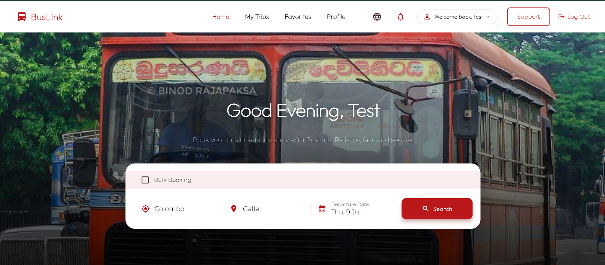

BusLink
Improving the intercity bus-booking experience. BusLink began with commuter and stakeholder evidence, then moved through insight synthesis, feature prioritisation, backlog decisions, UX, three Agile sprints and system validation.
Context: An academic capstone developed as a working, test-validated system. It is not presented as a commercially launched service.
- Evidence
- 102 commuter surveys and 10+ stakeholder interviews
- Options
- Features compared by impact and feasibility
- Choice
- A prioritised MVP backlog and reservation journey
- Trade-off
- Lower-priority and lower-feasibility ideas were deferred
- Validation
- 300+ audited system test cases across three sprints
102 Surveys
·
10+ Interviews
·
3 Sprints
·
300+ Test Cases
View Product Case